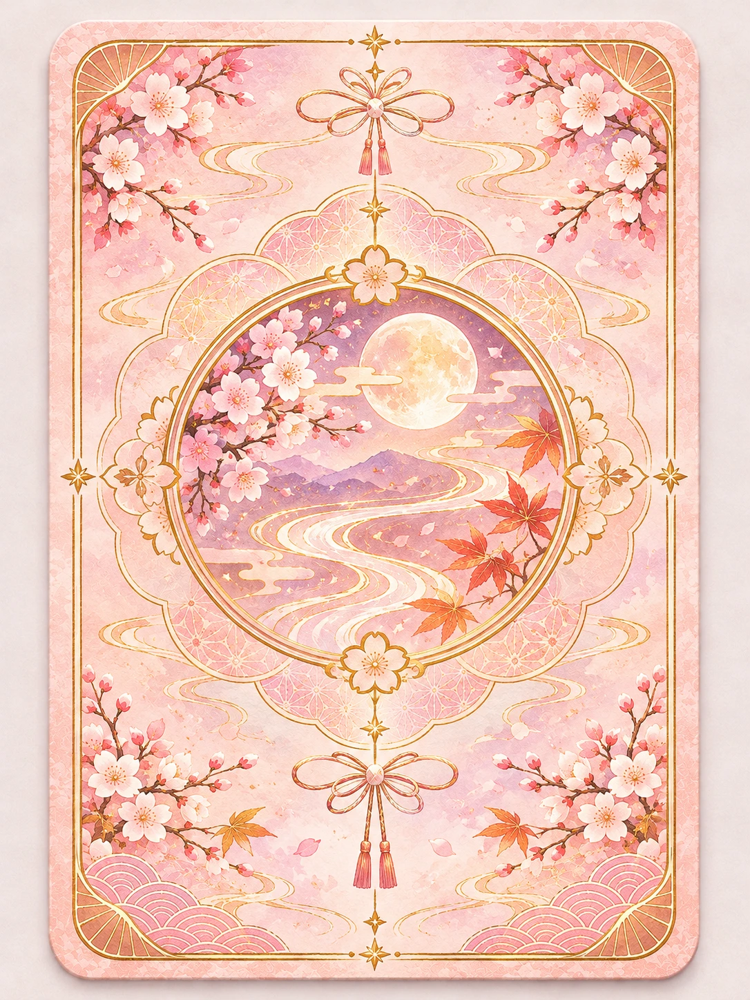

오늘의 감정 고르기
지금 내 마음과 가장 가까운 감정을 골라 보세요. 감정에 맞는 일본 고전 와카를 연결합니다.
A POEM FOR YOUR HEART
말로 표현하기 어려운 오늘의 감정이 있나요?
일본의 고전 시인이 남긴 짧은 노래에서
지금의 나에게 필요한 한마디를 발견해 보세요.
와카를 읽고 남긴 시와 다짐. 좋아요를 많이 받은 글을 소개해요.
HOW IT WORKS
복잡한 설명 없이, 누구나 쉽고 편안하게 즐기는 문학적 마음 기록
지금 내 마음과 가장 가까운 감정을 골라 보세요. 감정에 맞는 일본 고전 와카를 연결합니다.
어두워진 화면에서 빛나는 카드를 직접 뒤집으면 와카 원문과 번역, 표현의 유래가 공개돼요.
와카에서 얻은 다짐이나 감상을 짧은 글로 남겨 보세요. 마음 광장에서 서로 응원할 수 있어요.
한 장의 카드가 오늘의 감정을 다시 바라보는 계기가 될지도 모릅니다.
YOUR DAILY WAKA
오늘의 감정을 선택하고 아래 확인 버튼을 눌러 주세요.
시연 버전에서는 하루 횟수 제한 없이 80장을 모을 수 있어요.
0 / 80장의 와카를 수집했어요
오늘의 기분과 가장 가까운 감정 하나를 선택해 주세요. 8가지 감정마다 10편의 실제 고전 와카가 기다려요.
감정을 선택하고 확인해 주세요.
감정을 누르는 것만으로는 다음 화면으로 넘어가지 않아요.
A MOMENT FOR YOUR HEART
이 감정에 어울리는 옛 노래 한 수를 준비했어요.
급하게 넘기지 말고, 오늘의 마음에 집중해 보세요.

당신의 마음을 위한 한 수가 도착했어요.
직접 카드를 뒤집기 전까지 내용은 비밀이에요.
※ 우리말은 뜻을 이해하기 위한 의역입니다. 감정 분류는 현대적 감상으로, 시인의 원래 의도를 단정하지 않습니다.
※ 실제 미래를 예측하는 운세가 아니라, 고전 와카에서 영감을 받은 문학적 메시지와 하루의 제안입니다.
✧ 다시 만난 와카 · 이미 수집한 카드예요
✿ WAKA ORACLE · COLLECTION ✿
새로운 와카 카드 해금!
시를 읽고 난 뒤의 감정을 내 언어로 적어 보세요.
아직 남긴 기록이 없어요
오늘의 마음 한 줄을 남겨 보세요.♧ 이 데모의 일기는 별도 서버로 전송되지 않고 현재 브라우저의 저장 공간(localStorage)에만 저장됩니다. 브라우저 데이터를 지우거나 다른 기기를 사용하면 기록이 보이지 않을 수 있어요.
와카를 읽고 남긴 오늘의 시, 다짐, 감상을 나눠 보세요.
좋아요 한 번이 누군가의 내일에 응원이 됩니다.
아직 글이 없어요.
카드를 직접 뒤집어 만난 와카가 여기에 모여요.
획득한 카드만 자세한 원문·운세·그날의 마음을 다시 볼 수 있어요.
8개 감정 · 각 10장 · 이미 모은 카드는 각각 약 2% 확률로 다시 만날 수 있어요. 시연 버전에서는 하루 획득 제한이 없어요.
✿ 시연판의 도감은 현재 브라우저에 저장돼요. 같은 기기·같은 브라우저에서 다시 접속하면 수집 기록이 유지되지만, 시크릿 모드나 다른 기기에서는 동기화되지 않아요. 이미지 파일은 cards/card_001.webp ~ cards/card_080.webp로 관리하므로 나중에 원하는 번호만 교체할 수 있어요.